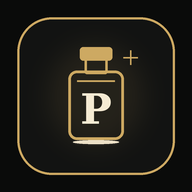

Estás sin conexión
Puedes seguir revisando las páginas que ya visitaste. Conéctate a internet para actualizar precios, stock, carrito y pedidos.

Puedes seguir revisando las páginas que ya visitaste. Conéctate a internet para actualizar precios, stock, carrito y pedidos.